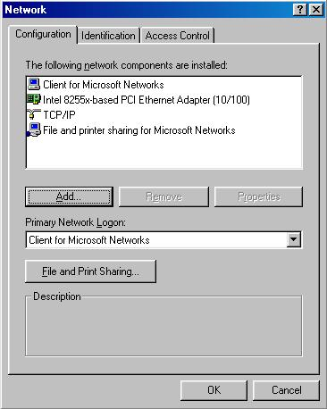

By Kurt Seifried, [email protected]
Windows 95 and 98 are designed for single user workstations and end consumer environments. Windows 95 and 98 are not capable of using more then one CPU (unlike Windows NT and 2000), they do not have memory protection (you can boot Linux from within Windows for example) and have no file security or real concept of users. What this means is that there is no real concept of security within Windows 95 and 98. If you can run code on the machine you can do anything you want, from modifying system files to destroying the partition table.
Your best defenses in Windows 95 and 98 are:
Removing unneeded network services is critical in windows 95 and 98 since the default is to install the windows network client when networking protocols such as TCP-IP are installed. With this software component installed a remote attacker can find out a lot about your computer. By querying your machine remotely, for example from an NT box:
nbtstat -A 10.3.0.1
NetBIOS Remote Machine Name Table Name Type Status --------------------------------------------- WORKSTATION0 <00> UNIQUE Registered WORKGROUP <00> GROUP Registered WORKSTATION0 <03> UNIQUE Registered MAC Address = 00-60-82-F8-F4-93
Workstation0 is the name of the workstation, and Workgroup is the name of the workgroup, the numeric code is the service. With Windows file and print sharing enabled the remote attacker can find out even more information:
NetBIOS Remote Machine Name Table Name Type Status --------------------------------------------- WORKSTATION0 <00> UNIQUE Registered WORKGROUP <00> GROUP Registered WORKSTATION0 <03> UNIQUE Registered WORKSTATION0 <20> UNIQUE Registered WORKGROUP <1E> GROUP Registered USERNAME <03> UNIQUE Registered WORKSTATION0 <1F> UNIQUE Registered MAC Address = 00-00-D2-E8-F2-53
They now have your username, and can connect to any shared files or printers you posses. Using share level controls can partially protect you, however I would not recommend depending upon it to share out and restrict access to resources. For the vast majority of home users removing the windows client as well as file and print sharing will not impinge on functionality if you do not need to share out any resources, or access resources on other windows machines. If you do need to share out files and printers you cannot selectively bind services to adapters, so all adapters will be vulnerable (in NT you would be able to shutdown services on a public interface connected to the Internet, but leave them enabled on an internal interface connected to your LAN).
Click on "Start" > "Settings" > "Control Panel" and then choose "Network":

Then select "File and printer sharing for Microsoft Networks" and click remove, do the same for "Client for Microsoft Networks".
This is relatively easy in Windows 95, and extremely easy in Windows 98. Download the updates for Windows 95 and then install them (one at a time, rebooting after each one as needed).
In Windows 98 they decided to make it easier, adding a link to the website on the primary start menu. Simple click on the "Windows Update" links, which takes you to:
http://windowsupdate.microsoft.com/
From there a small applet loads and does an inventory of what you have installed, and which version, then the items you need are displayed on a webpage, in descending order of importance (Critical security fixes first). You then click on the item, and download and install it, some fixes have to be installed on their own, and some you can install several at a time. You can also go to the above corporate URL if you wish to download the fixes (extremely useful if you have more then one Windows 98 machine).
There are many good anti-virus programs for Windows 95 and 98, the majority have a scanning component and virus signatures as well as access to upgrades (some more automated then others).
http://www.antivirus.com/ - TrendMicro (PC-cillin, about $30USD for single license)
http://www.norton.com/ - Norton (Anti-Virus, about $70 USD for single license)
http://www.mcafee.com/ - McAfee (Virus Clinic, about $30USD per year per license)
If your machine is online (as most are) then a personal firewall is a good idea. When installed properly and configured correctly they will stop most network based attacks cold. Again they range in price from free and up, most have some sort of subscription service for updates as well. I reccomend ZoneAlarm for home users since it is free and easy to setup:
http://www.zonelabs.com/ - ZoneLabs (ZoneAlarm, free, including upgrades)
Last updated 10/4/2002
Copyright Kurt Seifried 2001